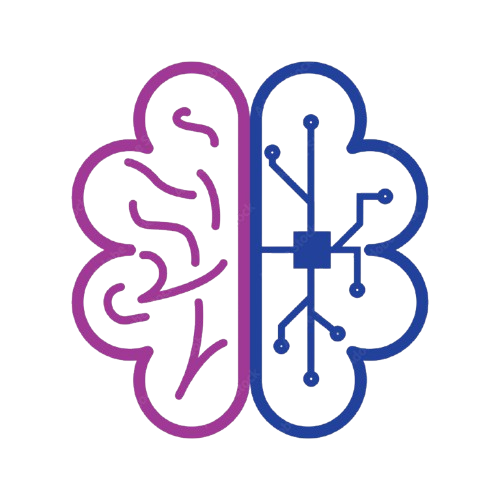
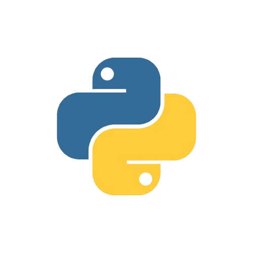
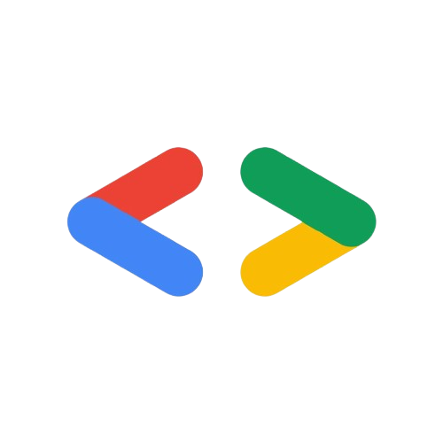

I am Soumyadip Dutta
⚡ About Me
Hey! I'm Soumyadip Dutta, a final-year Computer Science Engineering student at Haldia Institute of Technology (CGPA: 8.77 up to 6th semester), currently working as a QA Testing & Software Development Intern at Webrich Software.
Own words 😅 -- "Engineering is not an option; rather, it is a choice and a decision."
I love building things with code — from training machine learning models and researching satellite-based forest biomass estimation, to testing software and studying the fundamentals of cyber security. I've also had the privilege of leading community initiatives with GDG on Campus and CSI at HIT.
My focus areas include Cyber Security, Software Testing, Python Development, Machine Learning, and Problem Solving.
When I'm not coding, you'll find me watching movies, playing guitar🎸or simply imagining what the future holds. 🍀
🛠️ Skills
Technologies and tools I use across ML, development, and testing.
Programming Languages
Libraries & Frameworks
AI / ML
Testing Tools
Mobile Testing
Databases
Data Engineering
Developer Tools
Software Engineering
Languages Spoken
🧠 Projects & Research
A glimpse into my journey so far.
Explore more on GitHub →

Portfolio Website
AI Phishing Email Detector

Iris Species Predictor

Real Estate Valuation Prediction
ForestFormer: Biomass Estimation
Resource-Adaptive Federated Learning
Personal Projects
💼 Experience
Roles where I've applied my skills and grown as part of technical teams.
QA Testing & Software Development Intern
Jul 2026 – PresentWebrich Software Limited
- Working across software testing and development, contributing to application quality, functionality, and feature improvements.
- Performing manual and automation testing using Playwright, and supporting API testing, defect tracking, and test validation.
- Contributing to development tasks and using AI-assisted workflows to improve testing and development efficiency.
Public Relations & Management Lead
Nov 2024 – Present

Google Developer Groups (GDG on Campus), HIT- Lead public relations and event communications for campus GDG activities.
- Coordinate cross-functional teams to organize technical events, workshops, and community sessions.
- Manage outreach for 3+ technical events, improving student participation and engagement.
Core Member
Jul 2024 – Jul 2025Computer Society of India (CSI), HIT
- Organized technical events and workshops for 100+ students.
- Collaborated with the team to promote technical learning and student engagement.
📜 Certifications & Training
Continuous learning across development, embedded systems, and security.
Meta Front-End Development Certificate
Jan – Apr 2024Coursera
Completed the front-end development specialization and built a personal portfolio website as the capstone project.
Visteon Scholar Program
Nov 2025 – Jun 2026Phase 1 Completed and Qualified
Completed Phase 1 training covering Automotive Electronics, Clusters and Displays, Infotainment, Electrification, Sensors and Actuators, and Embedded Systems Fundamentals.
Advanced Python, ML & Cyber Security
Jan – Feb 2026Indian School of Ethical Hacking (In-House Internship)
Trained in supervised and unsupervised Machine Learning, Deep Learning fundamentals, and core Cyber Security & ethical hacking principles.
AI for Everyone – Certified AI Native
Mar – May 2026AI for Engineers Arena
Built an AI email phishing detector that scans threat emails in real time, integrating AI and Cyber Security with the Gmail API.
🏆 Coding Profiles
Check out my problem-solving journey across competitive coding platforms.
Keep In Touch.
I'm currently focused on Machine Learning and Cyber Security.
Feel free to connect with me and discuss your projects or collaborations.